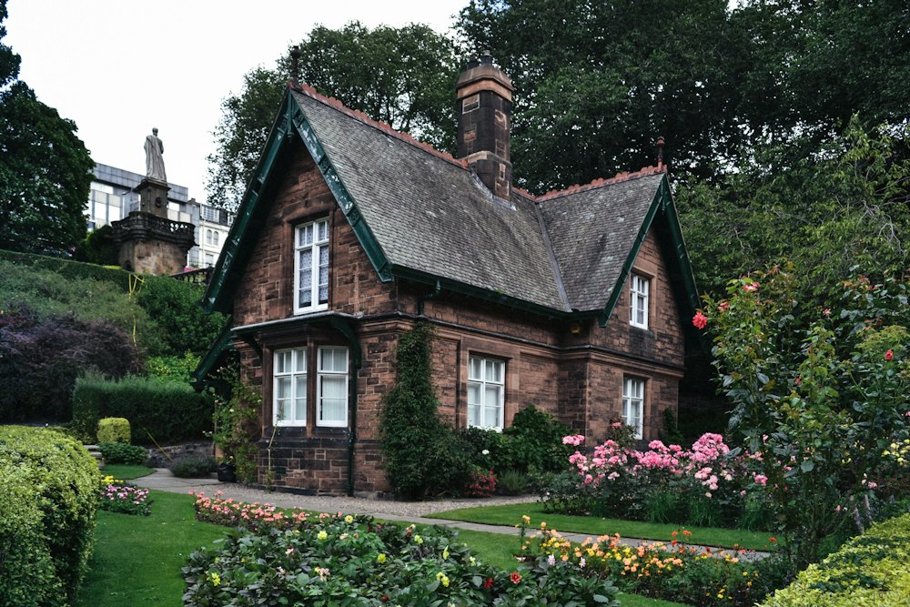
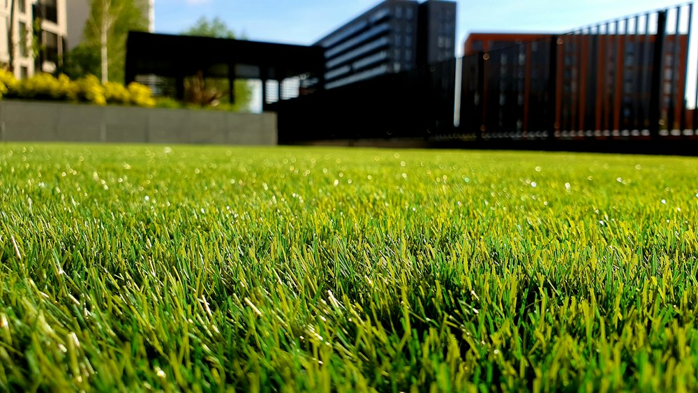
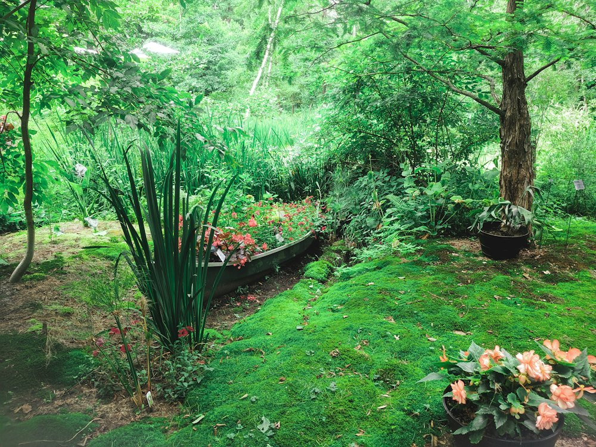
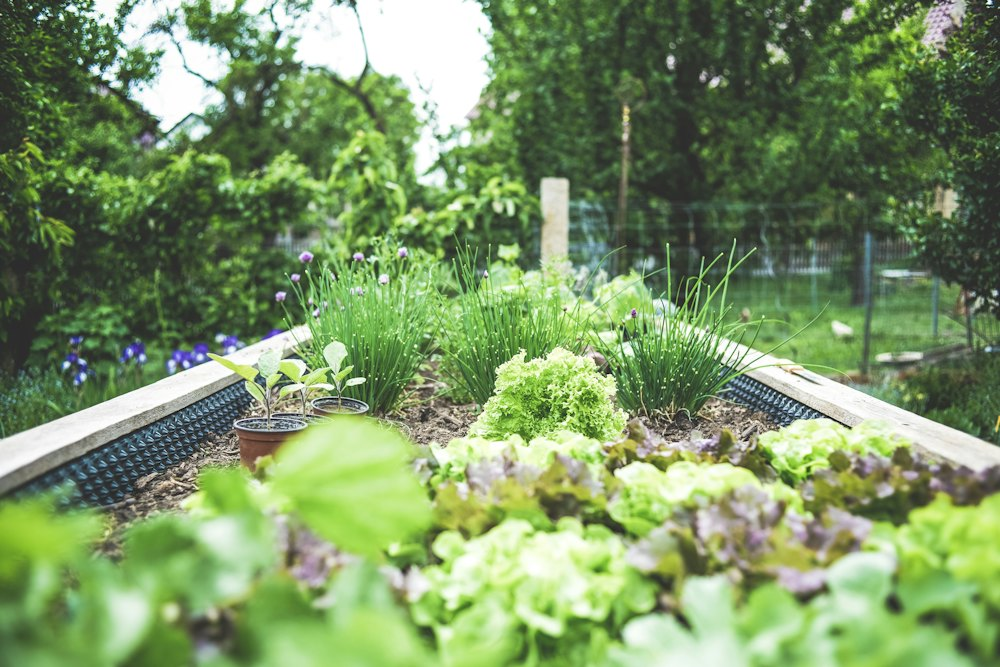
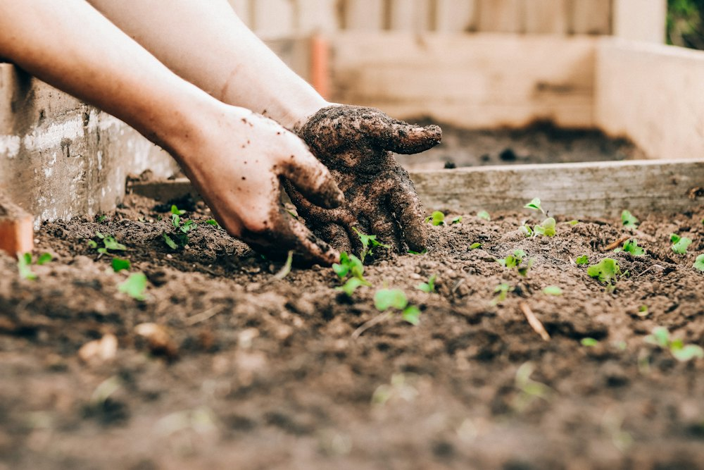
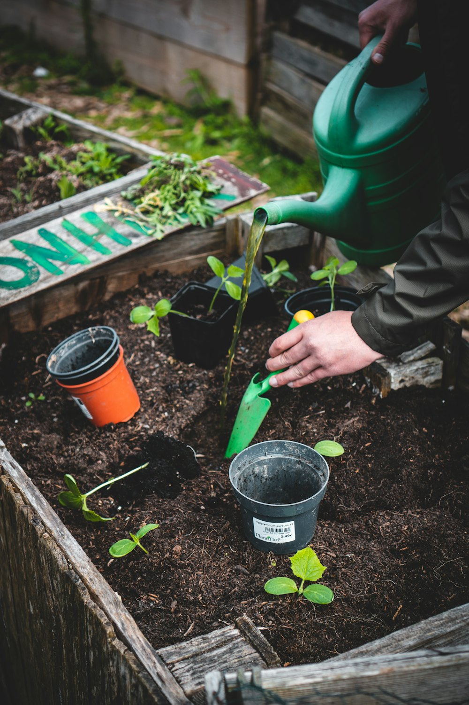
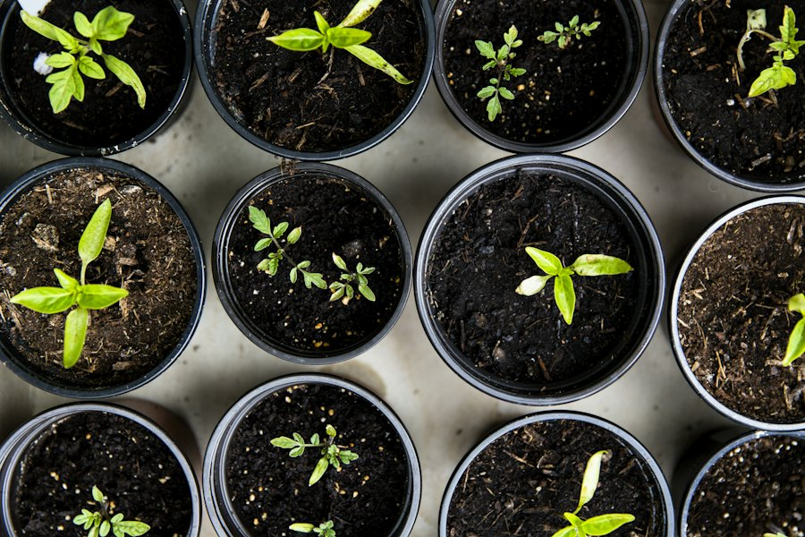

Tuinaanleg
Ontwerp op maat, grondwerk, beplanting, gazon of bloemenweide. Ook voor kleine stadstuinen.
vanaf 4 500 € · voor een tuin tot 150 m²
Tuinaanleg en onderhoud in Heist-op-den-Berg en de Zuiderkempen. Van ontwerp tot de laatste snoeibeurt, met een vaste ploeg die uw tuin kent.
Eén aanspreekpunt voor aanleg én onderhoud. We werken met planten van kwekers uit de streek en zonder pesticiden.

Ontwerp op maat, grondwerk, beplanting, gazon of bloemenweide. Ook voor kleine stadstuinen.
vanaf 4 500 € · voor een tuin tot 150 m²
Vast contract: maaien, borders wieden, hagen scheren, bladeren ruimen. U ziet ons elke 2 tot 4 weken.
vanaf 95 € · per beurt, tuin tot 300 m²
Vormsnoei, fruitbomen, hoogstammen en het veilig vellen van bomen. Met versnipperaar en opruiming.
vanaf 180 € · halve dag met 2 man
Keramische tegels, klinkers, kasseien of grind. Met afwatering die werkt en randen die recht blijven.
vanaf 110 €/m² · geplaatst, incl. funderingKies een maand en zie wat wij dan in uw tuin doen. Zo weet u altijd waarom we komen.
huidige maand
Een greep uit onze aanleg- en onderhoudsprojecten. Op de echte site komen hier uw eigen foto's, voor en na.

Gemengde borders, een boomgaard met oude appelrassen en een natuurlijke vijver. Tweewekelijks onderhoud door dezelfde ploeg.

Zes bakken in lariks, druppelbewatering en een compostplek. Startpakket met plantgoed inbegrepen.
Keramische tegels, varens en hortensia's voor een koer op het noorden. Geen gazon, wel groen.

Prairiebeplanting met grassen en vaste planten die van maart tot november iets te tonen hebben.

Een deel van onze vaste planten kweken we zelf op uit stek. Sterker plantgoed, minder transport.
Illustratieve projecten met voorbeeldgegevens en stockfoto's, geen echte adressen.

Geen verrassingen: u weet vooraf wat het kost, wanneer we komen en wie er in uw tuin staat.
We komen langs, luisteren naar wat u wilt en kijken naar grond, licht en water. Gratis en vrijblijvend.
Een schets met plantenlijst en een offerte met vaste prijs, binnen de week in uw mailbox.
Onze eigen ploeg, eigen machines. We houden de buren te vriend en laten de straat proper achter.
Een onderhoudscontract dat volgt wat de tuin nodig heeft, seizoen na seizoen. Opzegbaar per jaar.
★★★★★Onze koer is een tuin geworden waar de kinderen elke dag in spelen. Het plan klopte tot op de plant.
★★★★★Al vier jaar in onderhoud. Altijd dezelfde mannen, altijd op het afgesproken moment, altijd proper.
★★★★★De oude beuk vellen was een hele operatie. Alles veilig, geen schade, en 's avonds was het hout al versnipperd.
Illustratieve teksten. Op de echte site tonen we uw Google-beoordelingen.
Een paar vragen volstaan. We bellen u binnen twee werkdagen om een bezoek in te plannen.
 Liever bellen of WhatsAppen?015 00 00 01, ma tot vr 7:30 – 17:30. Stuur gerust een foto van uw tuin mee.
Liever bellen of WhatsAppen?015 00 00 01, ma tot vr 7:30 – 17:30. Stuur gerust een foto van uw tuin mee.